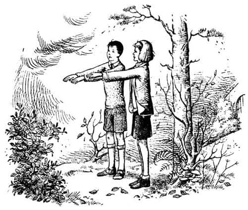
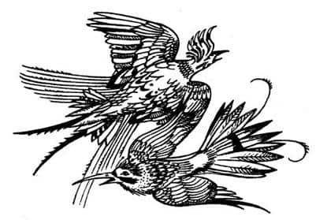
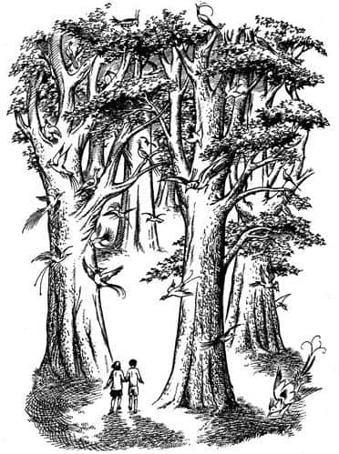
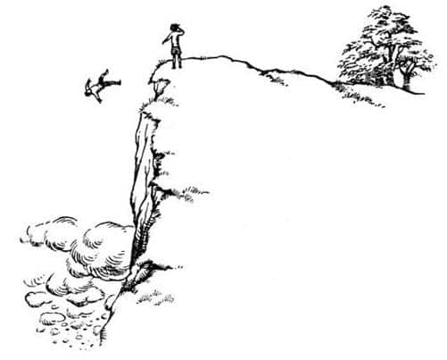

Spor Salonunun Arkasında
Kasvetli bir sonbahar günüydü ve Jill Pole spor salonunun arkasında ağlıyordu.
Ağlıyordu, çünkü ona kabadayılık taslıyorlardı. Size bir okul hikâyesi anlatmaya niyetli değilim; Jill’in okulu pek de hoş bir konu değil zaten. Bu yüzden bundan mümkün olduğunca az bahsedeceğim. Burası “karma eğitim” yapılan, yani hem kız hem de erkek çocukların gidebildiği bir okuldu; okul karmaydı, okulu yönetenlerin kafalarıysa karmakarışık. Bu insanlar çocukların istedikleri her şeyi yapmasına izin verilmesi gerektiğini düşünüyordu. Ne yazık ki, on ya da on beş büyük kız ve erkek çocuk vardı ki, en sevdikleri şey birbirlerine kabadayılık taslamaktı. Diğer okullarda bu ve benzeri sorunların fark edilip çözüme kavuşturulması yarım dönemden çok sürmüyordu, ama bu okulda ne fark ediliyor ne de önleniyordu. Fark edilse bile sorumlular cezalandırılmıyor, okuldan atılmıyordu. Müdür bunların ilginç psikolojik durumlar olduğunda ısrar ediyor ve sorumluları çağırarak onlarla saatlerce konuşuyordu. Nabza göre şerbet vermeyi bilen yaramazlar, bırakın cezalandırılmayı, müdürün sevdiği öğrenciler arasına bile girebiliyordu.
Jill Pole’un, o kasvetli sonbahar gününde spor salonunun arkasından çalılıklara doğru giden küçük ve çamurlu patikada ağlamasının nedeni buydu. Bir oğlan elleri ceplerinde ıslık çalarak salonun köşesini döndüğünde, o hâlâ ağlıyordu. Oğlan az daha ona çarpacaktı.
“Önüne baksana!” dedi Jill Pole.
“Tamam” dedi çocuk, “abartmana gerek—” sonra Jill’in yüzünü gördü ve onu tanıdı. “Bana bak Pole” dedi, “neler oluyor?”
Jill sadece yüzünü buruşturdu; hani bir şey söylemeye çalışırsınız, ama konuşursanız ağlamaya başlayacağınızı hissedersiniz ya, işte o türden bir buruşturmaydı bu.
“Yine onlar, sanırım. Her zamanki gibi” dedi çocuk ümitsizce, ellerini yeniden ceplerine sokarak.
Jill başını salladı. Konuşmayı başarabilseydi bile, söyleyecek bir şeyi yoktu. İkisi de neler olup bittiğini biliyordu.
“Dinle” dedi çocuk, “bize hiçbir yararı yok—”
Niyeti iyiydi, ama nasihat etmeye başlayan her insan gibi, o da sadece konuşuyordu. Jill aniden sinirlendi (eğer biri ağlamanızı yarıda keserse sinirlenmeniz çok normaldir).
“Sen kendi işine bak” dedi. “Kimse bu işe burnunu sokmanı istemedi, değil mi? Kimin ne yapması gerektiğini söyleyip iyi biri olduğunu ispatlayacaksın, değil mi? Sanırım tüm zamanımızı yaltaklanarak, gözlerine girmeye çalışarak, senin yaptığın gibi etraflarında dört dönerek geçirmemiz gerektiğini söyleyeceksin.”
“Aman Tanrım!” dedi çocuk. Çalılığın kenarındaki tümseğe oturmuş, ama otlar ıslak olduğu için aceleyle ayağa kalkmıştı. İsmi Eustace Scrubb’dı ve kötü biri değildi.
“Pole!” dedi. “Bu adil mi? Son zamanlarda, bu söylediklerinden herhangi birini yaptım mı ki? Tavşan konusunda Carter’a karşı gelmedim mi? Spivvin’lerin sırrını saklamadım mı – hem de işkence görmeme rağmen? Ve ben—”
“Ben-ben bilmiyorum ve ayrıca umrumda da değil” diyerek hıçkırıklara boğuldu Jill.
Scrubb, Jill’in henüz kendine gelemediğini anlamıştı ve akıllılık ederek ona nane şekeri teklif etti. Kendisi de bir tane attı ağzına. Az sonra Jill her şeyi daha net görmeye başlamıştı.
“Özür dilerim Scrubb” dedi. “Haksızlık ettim. Bu dönem tüm bu söylediklerini yaptın.”
“Eğer elinden geliyorsa, daha önce olanları unut, olur mu?” dedi Eustace. “O zaman ben başka biriydim. Ben… of! Küçük bir keneydim.”
“Sahiden öyleydin” dedi Jill.
“Öyleyse, bir değişiklik görebiliyor musun?” dedi Eustace.
“Sadece ben değil” dedi Jill. “Herkes öyle söylüyor. Onlar da fark etti. Eleanor Blakiston, Adela Pennyfather’ı dün soyunma odasında bunun hakkında konuşurken duymuş. Demiş ki, ‘Birinin şu Scrubb denen çocukla ilgilenmesi gerek. Bu dönem idaresi çok güç oldu. Artık onun icabına bakmamız gerekecek.’”
Eustace ürperdi. Uygulama Okulu’ndaki herkes, birinin onlar tarafından “icabına bakılması”nın ne demek olduğunu bilirdi.
İki çocuk da bir an için sustu. Defne yapraklarından su damlacıkları süzülüyordu.
“Geçen dönem neden o kadar farklıydın?” dedi Jill az sonra.
“Tatilde bir sürü tuhaf şey oldu” dedi esrarengiz bir biçimde.
“Ne tür şeyler?” diye sordu Jill.
Eustace uzun süre bir şey söylemedi. Sonra dedi ki, “Bana bak Pole, sen ve ben buradan nefret ediyoruz, değil mi?”
“Ben ediyorum” dedi Jill.
“O zaman sanırım sana gerçekten güvenebilirim.”
“Pek de iyi niyetlisin!” dedi Jill.
“Evet, ama bu gerçekten çok müthiş bir sır. Pole, bana bak, şeylere inanır mısın, buradaki herkesin güleceği türden şeylere?”
“Bilmem ki” dedi Jill, “belki inanırım.”
“Geçen tatilde dünyanın dışına, yani bizim dünyamızın dışına çıktığımı söylesem bana inanır mıydın?”
“Ne söylediğini anlamıyorum.”
“Pekâlâ, dünyaları boşverelim o zaman. Konuşan hayvanların, büyülerin, ejderhaların ve peri masallarındaki şeylerin olduğu bir yere gittiğimi söylediğimi düşün bakalım.” Bunu söylerken yüzü kızarmıştı.
“Oraya nasıl gittin?” dedi Jill. Tuhaf, ama o da biraz utanıyordu.
“Oraya gidebilmenin tek yolu büyü” dedi Eustace fısıldayarak. “İki kuzenimle beraberdim. Hepimiz bu dünyadan koparılıp götürüldük. Onlar daha önce oraya gitmişti.”
Artık fısıldayarak konuştukları için, her nasılsa Jill’in anlatılanlara inanması daha bir kolaylaştı. Sonra aniden korkunç bir kuşkuya düştü (öylesine ciddi bir tavırla konuştu ki bir an için bir kaplana benzedi).
“Eğer benimle dalga geçiyorsan, bir daha asla konuşmam senle, asla, asla, asla” dedi.
“Dalga geçmiyorum” dedi Eustace. “Dalga geçmediğime yemin ederim. Her şeyin üzerine yemin ederim.”
(Ben okuldayken, “Annem üzerine yemin ederim” derdik. Ancak Uygulama Okulu’nda annelere aldırış eden yoktu.)
“Tamam” dedi Jill, “sana inanıyorum.”
“Kimseye tek kelime etmeyeceksin değil mi?”
“Sen beni ne sanıyorsun?”
İkisi de çok heyecanlanmıştı. Sonra Jill etrafına bakındı, donuk sonbahar göğünü seyretti, yapraklardan damlayan zerreciklerin sesini duydu, Uygulama Okulu’ndaki çaresiz hallerini düşündü ve (bu on üç haftalık bir dönemdi ve daha on bir haftaları vardı) dedi ki: “İyi diyorsun da, bu anlattıklarının ne yararı var ki? Orada değiliz. Buradayız. Ve oraya gidemeyiz. Gidebilir miyiz yoksa?”
“Bunu ben de merak ediyorum” dedi Eustace. O yerden geri döndüğümüzde birisi Pevensie Kardeşler’in (onlar benim kuzenlerim) oraya tekrar gidemeyeceklerini söyledi. Bu onların üçüncü gidişiydi, anlarsın ya. Sanırım tüm haklarını kullandılar. Ancak bana böyle bir şey söylenmedi. Benim de geri dönemeyeceğimi söylemek isteseydi eminim bunu açıkça dile getirirdi. Bu fikir hiç çıkmıyor aklımdan; acaba gidebilir miyiz?”
“Oraya gidebilmek için çabalayalım mı diyorsun?”
Eustace başını salladı.
“Yani yere bir çember çizecek, ortasına garip harfler yazıp içine girerek tılsımlar eşliğinde büyüler mi mırıldanacağız?”
“Şey” dedi Eustace, bir süre dikkatle düşündükten sonra. “Hiç denemedim, ama düşünmedim değil. Ama artık çember member işe yaramaz. Bundan hoşlanacağını sanmıyorum. Ona zorla bir şeyler yaptırmaya çalıştığımızı düşünür. Ondan izin almadan hiçbir şey yapamayız.”
“Hakkında konuştuğun bu kişi kim?”
“Orada ona Aslan diyorlar” dedi Eustace.
“Ne tuhaf isim!”
“Kendi de en az ismi kadar tuhaf” dedi Eustace ciddi bir şekilde. “Bir deneyelim, denemenin bir zararı olmaz. Böyle yan yana duralım ve kollarımızı, avuçlarımız yere bakacak şekilde önümüze uzatalım. Aynı Ramandu’nun adasında yaptıkları gibi—”
“Kimin adası?”
“Bunu daha sonra anlatırım. Doğuya bakmamızdan hoşlanabilir. Bakalım, doğu nerede?”
“Bilmiyorum” dedi Jill.

“Kızların yön bulma konusunda bu kadar beceriksiz olmaları çok acayip” dedi Eustace.
“Sen de bilmiyorsun” dedi Jill, öfkeyle.
“Ben biliyorum, lafımı kesip durma. İşte buldum. Yüzümüzü defnelere dönelim, doğu orada. Şimdi, söylediklerimi tekrar eder misin?”
“Ne söyledin ki?” diye sordu Jill.
“Dur daha söyleyeceğim” diye cevapladı Eustace. “Şimdi—”
Konuşmaya başladı. “Aslan, Aslan, Aslan!”
“Aslan, Aslan, Aslan” diye tekrarladı Jill.
“Lütfen gelmemize izin—”
O anda spor salonunun öbür tarafından birinin bağırdığı duyuldu, “Jill mi? Evet. Nerede olduğunu biliyorum. Spor salonunun arkasında ağlıyor. Gidip getireyim mi?”
Jill ve Eustace birbirlerine baktı. Defnelerin altına daldılar, dik ve topraklık yokuşu gurur duyulacak bir hızla tırmanmaya başladılar. Uygulama Okulu’ndaki öğretim yöntemi sayesinde (Fransızca, matematik, Latince ve bu tür dersleri fazla öğrenmedilerse de), çok iyi öğrendikleri bir şey vardı; onlar peşindeyse yapılacak tek şey, çabuk ve sessizce uzaklaşmaktı.
Yaklaşık bir dakika tırmandıktan sonra takip edilip edilmediklerini kontrol etmek için durdular ve duydukları seslerden takip edildiklerini anladılar.
“Keşke kapı açık olsa!” dedi Scrubb yola devam ederlerken, Jill onaylamak için başını salladı. Çünkü tepede yüksek bir taş duvar ve duvarda açık araziye açılan bir kapı vardı. Bu kapı genelde kilitliydi. Fakat çocukların, onu açık bulduğu da olmuştu; belki sadece bir kez açık unutulmuştu. Bir kereliğine bile olsa, kapının açık unutulmasının çocukları nasıl umutlandırdığını tahmin edebilirsiniz; sürekli kapıyı açmayı deniyorlardı, çünkü kapı kilitli olmazsa, bu, görünmeden okul arazisinin dışına çıkmanın harika bir yolu olurdu.
Jill ve Eustace; defnelerin arasında iki büklüm ilerlemeye çalışmaktan terlemiş ve kirlenmiş bir halde, soluk soluğa duvara vardılar. Her zamanki gibi, kapı yine kapalıydı.
“İşe yaramayacağından eminim” dedi Eustace, eliyle kapının kolunu tutarken; ama sonra, “A-a-ah! Eyvah!” diye bağırdı. Çünkü kol dönmüş ve kapı açılmıştı.
Az önce, yani kapının kilitli olmaması küçük bir olasılıkken, diğer tarafa geçmek için can atıyorlardı. Ancak kapı gerçekten açıldığında ikisi de hiç kımıldamadan durdu. Çünkü gördükleri şey beklediklerinden oldukça farklıydı.
Gri ve çalılık yamacın gittikçe yükselerek donuk gökyüzüne karıştığı bir manzara beklemişlerdi. Onun yerine alev alev parlayan bir günışığı karşıladı onları. Haziran güneşi kapısı açılan bir garaja nasıl süzülürse, güneş işte öyle süzülüyordu kapıdan. Işık, otlardaki su damlalarının boncuk gibi parlamasına neden oluyor ve Jill’in gözyaşlarıyla lekelenmiş yüzünün kirliliğini ortaya çıkarıyordu. Günışığı bambaşka bir dünyadan geliyormuş gibi görünüyordu. Zemin, Jill’in şimdiye kadar gördüklerinden daha düzgün ve parlak bir zemindi, mavi bir gökyüzü ve uçuşan parlak şeyler vardı. Bunlar öylesine parlaktı ki, Jill mücevher mi, kelebek mi karar veremedi.
Jill böyle bir şey dilemiş olmasına rağmen korkmuştu. Scrubb’ın yüzüne baktı ve onun da korktuğunu gördü.
“Haydi Pole” dedi Eustace, nefes nefese.
“Geri dönebilecek miyiz? Güvenli mi?” diye sordu Jill.
O anda arkalarından bağıran bir ses duydular. “Haydi Pole” diye haykırdı. “Herkes orada olduğunu biliyor. Gel aşağı.” Bu, onlardan biri olmayan ama onlarla takılıp dedikodu yapan Edith Jackle’ın sesiydi.
“Çabuk!” dedi Scrubb. “İşte. Tut elimi. Kaçmamız gerek.” Jill ne olduğunu anlayamadan, Scrubb elini tutarak onu kapının öbür yanına, okul arazisinin, İngiltere ve dünyamızın dışındaki o yere çekmişti.

Edith Jackle’ın sesi, radyoyu kapattığımızda olduğu gibi, aniden duyulmaz oldu. Etraflarını değişik sesler sardı. Sesler, başlarının üzerinde uçuşan o parlak şeylerden geliyordu; artık onların kuş olduğunu anlamışlardı. Acayip sesler çıkarıyorlardı, ama bizim dünyamızdaki kuşların şarkılarından (ilk duyuşta tam olarak algılanamayan oldukça gelişmiş bir müzikti bu) çok daha melodikti. Bu şarkılara rağmen geri planda korkunç bir sessizlik vardı. Sessizlikle birlikte havanın berraklığı, Jill’e çok yüksek bir dağın tepesinde olduklarını düşündürüyordu.
Scrubb hâlâ elini bırakmamıştı, etraflarına bakarak ilerliyorlardı. Jill her yerde sedir ağaçlarına benzeyen, ancak daha büyük, yaşlı ağaçlar gördü. Ağaçlar sık olmadığı için, ormanın epeyce ilerisini görebiliyorlardı. Jill’in gözünün görebildiği her yer aynıydı: Düzgün bir zemin; sarı, yusufçuk mavisi ya da gökkuşağı renkli tüyleriyle uçuşup duran kuşlar; mavi gölgeler ve boşluk. O serin ve berrak havada en küçük bir esinti bile yoktu. Çok ıssız bir ormandı.

Tam karşılarında ağaçlar bitiyor, mavi bir gökyüzü başlıyordu. Konuşmadan dosdoğru ilerlediler. Jill aniden Scrubb’ın, “Dikkat et!” dediğini duydu, geriye çekildiğini hissetti. Bir uçurumun kenarındaydılar. Jill, yükseklik korkusu olmayan şanslı insanlardandı. Uçurumun kenarında durmaktan hiç çekinmiyordu. Scrubb’ın onu geriye çekmesine bozulmuştu, “Sanki çocuğum” dedi ve öfkeyle çekti elini. Scrubb’ın yüzünün bembeyaz kesildiğini gördüğünde küçümseyerek baktı.
“Sorunun ne?” diye sordu. Korkmadığını göstermek için uçurumun yakınında duruyordu; aslında onu bile korkutacak yakınlıktaydı. Sonra aşağıya baktı.
Scrubb’ın neden bembeyaz kesildiğini artık anlayabiliyordu, çünkü bu uçurum dünyamızdaki hiçbir uçurumla kıyaslanamazdı. Kendinizi, bildiğiniz en yüksek uçurumun tepesinden aşağı bakarken düşünün. Sonra uçurumun bundan on kez, belki de yirmi kez daha derin olduğunu hayal edin. Bu yükseklikten aşağı baktığınızda, ilk bakışta koyunlara benzettiğiniz, ama sonra, küçük sis kümeleri değil, dağlar kadar büyük şişkin bulutlar olduğunu anladığınız küçük beyaz şeyler gördüğünüzü hayal edin. Son olarak da bulutların arasından uçurumun dibini gördüğünüzü, ama uzaklığından dolayı tarla mı, ormanlık mı ya da deniz mi olduğunu çıkaramadığınızı, size bulutlardan kat kat daha uzak olduğunu düşünün.
Jill baktı. Sonra bir-iki adım geri çekilmesi gerektiğini düşündü; Scrubb’ın onunla dalga geçmesinden çekindiği için gerilemek istemiyordu. Sonra aniden onun ne düşündüğünü umursamadığını, o korkunç uçurumdan uzaklaşmaktan başka çaresinin olmadığını düşünüp bir daha yüksekten korkanlara asla gülmeyeceğine söz verdi. Ancak hareket etmeyi denediğinde, yapamadığını anladı. Bacakları sanki hamur olup yapışmıştı taşlara. Her şey gözlerinin önünde uçuşuyordu.
“Ne yapıyorsun Pole? Geri dön! Seni küçük sakar!” diye bağırdı Scrubb. Ancak sesi çok uzaklardan geliyormuş gibiydi. Jill, Scrubb’ın onu tuttuğunu hissetti. Ama artık kol ve bacaklarının kontrolünü kaybetmişti. Uçurumun kenarında bir anlık bir boğuşma oldu. Jill ne yaptığını bilemeyecek kadar sersemlemiş ve korkmuştu. Yaşadığı sürece iki şeyi hep hatırlayacaktı (sık sık rüyasında görecekti onları): Birincisi, Scrubb’ın elinden sıyrılıp kurtulması, ikincisi ise, aynı anda, Scrubb’ın da dengesini kaybederek hızla düşmeye başlaması.

Ne yaptığını düşünecek vakti olmamıştı. Koskocaman, rengârenk bir hayvan hızla uçurumun kenarına geldi. Yere yatarak kenardan sarktı ve (asıl tuhaf olan buydu) üflemeye başladı. Kükremiyor ya da burnundan solumuyordu; sonuna kadar açılmış ağzıyla üflüyordu; bir vantilatör gibi sürekli üflüyordu. Jill yaratığın o kadar yakınında yatıyordu ki, yaratığın nefesinin vücudunu titrettiğini hissedebiliyordu. Hareketsiz yatıyordu, ayağa kalkamıyordu. Neredeyse bayılmak üzereydi. Aslında bayılmış olmayı arzuluyordu, ama insan istediğinde bayılamazdı ki. Sonunda aşağıdaki minicik siyah lekenin kayalıklardan uzaklaşarak yükseldiğini gördü. Yükseldikçe uzaklaşıyordu da. Uçurumun tepesiyle aynı seviyeye geldiği zaman o kadar uzaktaydı ki, Jill onu göremiyordu. Büyük bir hızla onlardan uzaklaşıyordu. Jill, yanındaki yaratığın onu uzaklara üflediğini düşünmekten kendini alamadı.
Dönüp yaratığa baktı. Bu bir aslandı.